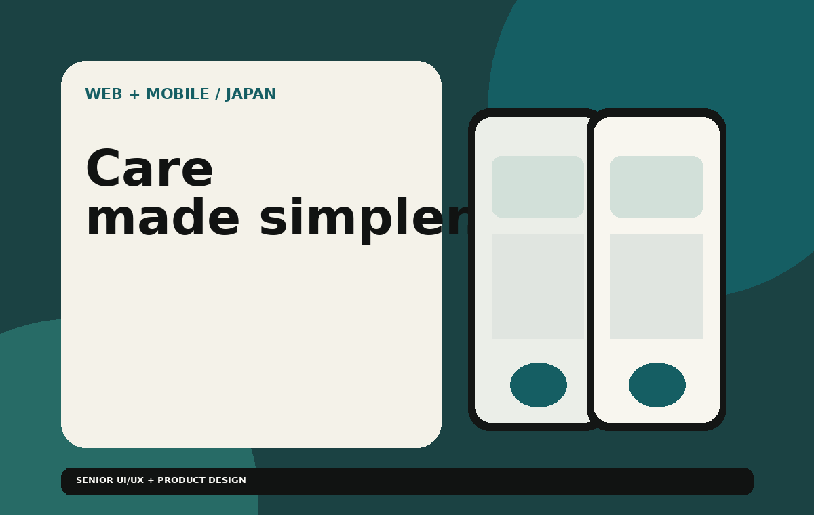

01 / HEALTHCAREBEST DESIGN AWARD · JAPAN

Cloud Web and Mobile App · IOT
02
JAPAN · CARE TECHNOLOGY
Elderly Care Monitoring System
RX5 is an IoT-based healthcare monitoring solution designed to help nurses monitor elderly patients in real time. By connecting sensors and monitoring devices, the system brings patient-room status and alerts into a centralized dashboard, supporting safer and more efficient care. The solution includes web and mobile interfaces for accessible monitoring across devices.
RoleLead Product Designer
FocusUX Strategy · Research · Harware and Embedded Knowledge · UI Design · Prototyping · Product Planning
RecognitionBest Design Award — Japan